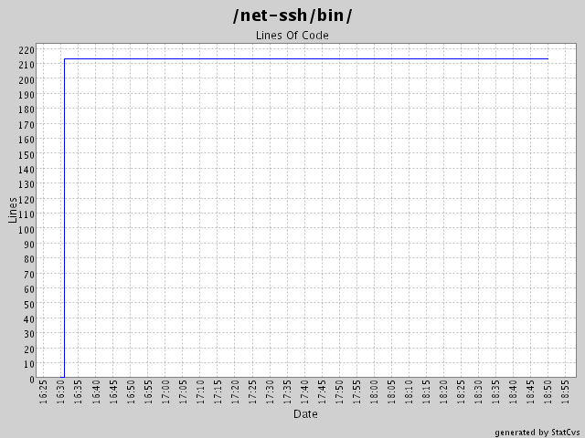

Generated by StatCvs v0.1.3
Summary Period: 2004-07-28 to 2004-07-28

Total Lines Of Code:
213 (2004-08-17)
| User | Changes | Lines of code | Lines each change |
|---|---|---|---|
| minam | 2 (100.0%) | 215 (100.0%) | 107 |
| Sum | 2 (100%) | 215 (100%) | 107 |
|
minam 7/28/04 6:49 PM |
Public keys were being written in the wrong format. |
| 20 lines of code changed in: net-ssh/bin/rb-keygen (+20 -2) | |
|
minam 7/28/04 4:31 PM |
Key generation utility for Net::SSH. |
| 195 lines of code changed in: net-ssh/bin/rb-keygen (new 195) | |

Generated by StatCvs v0.1.3